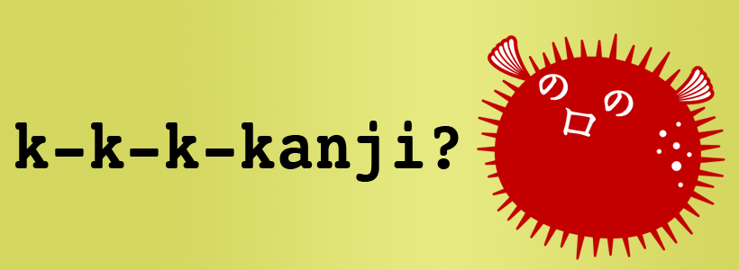

How You Should Learn Kanji
“What information consumes is rather obvious: it consumes the attention of its recipients. Hence, a wealth of information creates a poverty of attention and a need to allocate that attention efficiently among the overabundance of information sources that might consume it.” – Herbert Simon, Nobel Prize

Kanji is one of the biggest hurdles you’ll face in your Japanese learning career (do you remember what kanji is?). In order to to feel really comfortable reading (say, a newspaper), you’ll have to know around 2,000 different kanji, and that doesn’t even take into account all the combinations that kanji can make when stuck together. It also doesn’t take into account the fact that each individual kanji can have up to 5, 6, 7, or more different pronunciations. Learning kanji is no easy feat, and it certainly won’t happen overnight. Japanese school children spend 8+ years learning kanji, not to mention they have every day access to the stuff (and you probably don’t). Don’t worry, though, because you’ll beat them by a long shot.
The thing is, very few resources teach kanji in a way that actually makes sense for non-native Japanese learners. When you learn most languages, you go from simple words to more complicated ones. You even did this when you were a child (presumably) learning English. You probably learned the word “dog” before you learned the word “atrocious,” right? Kanji learning, however, is much different than vocabulary learning, and the problem is that most people treat kanji learning like they do vocabulary learning: Start with the words that have the simplest meanings (not to be confused with the simplest kanji) and work your way up. There’s a couple reasons why kanji doesn’t work that way.
- Kanji is logographic, meaning each kanji has a different meaning (and they’re based off images).
- Kanji isn’t phonetic, like English, where you can put together English letters to make a word based on the sounds each letter makes.
- The meaning of the kanji and how complicated the actual kanji is don’t really correlate, meaning a kanji with a difficult meaning can be very very simple to write, and vice versa.
For example, there are kanji that get taught much later in a student’s career that are incredibly really simple (to write). The meaning may be hard, but the kanji itself is very simple. The thing is, you’re (probably) not a child anymore, which means you don’t need to learn the meaning of words, so if we truly are looking to the long term benefits (and we are), then it doesn’t matter what the meaning of the word is, because you already understand that. You just need to learn the kanji part itself. Take a look at the following kanji, pretty simple looking right? None of them consist of more than three strokes (whereas there are plenty of kanji with 10-20 strokes out there).
乙 了 丈 勺
These are “high level” vocabulary words (i.e. the meaning of the words are more difficult, though not that difficult for you, since you’re not a kid), which means Japanese students learn these way later, like in secondary school. On the other hand, there are also plenty of kanji with simple meanings, but take quite a few strokes to write:
曜 線 鳴 算
The second set of kanji are learned by second graders – i.e. little kids, because the meaning of the kanji is simpler than the ones above them, not because they’re easier to write. Can you imagine how dumb it would be for you to learn the second set of kanji before the first set of kanji? It just makes no sense, but that’s exactly what you would do if you were learning Japanese the “regular” way. Ouch.
On TextFugu, you’re going to take a look at the whole “kanji problem” a bit differently (i.e. in a way that actually makes sense). There are 2,000 total kanji you have to learn. That’s set in stone, you have to learn them. Luckily, though, we have a choice on how we learn them. Instead of following the path of so many kanji learning failures, you should forge your own path. You’ll learn kanji faster than Japanese school children do (not to mention anyone else learning Japanese as well).
Big Picture Takeaway
You will be learning kanji the smart way. Unfortunately, the way we learn words in English / German / Spanish etc., just doesn’t translate over to Japanese (because kanji isn’t phonetic, it’s logographic). With Japanese, we’ll be using a different method that will help you build your kanji knowledge based off of things you’ve already learned and know. We won’t be shooting blanks into the air, hoping to hit something.
The 80-20 Rule
“Give me the fruitful error any time, full of seeds, bursting with its own corrections. You can keep your sterile truth for yourself.” - Vilfredo Pareto
If you’ve spent any time looking up kanji in a dictionary, researching all the pronunciations, and finding all the words that use that kanji, you’ll know that kanji learning can be incredibly complicated. Let’s simplify that. Have you ever heard of the 80-20 rule, coined by Vilfredo Pareto? I absolutely love this concept, and you’re going to love it too when applied to kanji learning. He figured out that 80% of the effects of something come from roughly 20% of the causes. Here are some examples:
- 20% of people make 80% of the world’s income.
- Microsoft found that by fixing the top 20% of most reported bugs, 80% of all problems were fixed.
- 20% of your time spent gets 80% of the results done (at work, school, etc).
Those are some pretty big numbers and claims, but if you look for it, you’ll see this principle taking place everywhere. We’ll be using the 80-20 rule throughout TextFugu, and you’ll definitely learn to love it. With kanji, here is our mantra:
20% of kanji makes up 80% of all that is written, therefor we’re going to learn that 20% first, so you can start using your reading abilities in real-life situations as quickly as possible (which is really the best way to practice, anyways).
We’re also going to use the 80/20 rule to learn the various pronunciations of kanji as well.
20% of pronunciations associated with a particular kanji are used 80% of the time.
And last but not least, each kanji will have some common vocab associated with it. Some kanji are used in hundreds of different common words, but I’d rather you learn just a few of the most common ones and move on (and we’ll fill in the rest later on… besides, they’re barely used).
20% of vocab that use a particular kanji will be used 80% of the time.
With TextFugu, you’re going to be learning the “Joyo Kanji,” which is actually pretty much par for the course. Joyo kanji are the (approximately) 2000 most commonly used kanji. That may seem like a lot (or a little, depending on how you look at it), but with this, you’ll be able to read 95% of all mainstream books, newspapers, magazines, manga, and whatever else Japan throws at you. Sure, we could spend 4x the time learning 8,000 kanji (like college students), but that’s a huge waste of your time. If you think about it, it’s probably a pretty similar situation with your English (or whatever your native language is). I’m pretty sure that you can’t understand 100% of the words you read, but you can still figure out what it is via the context of the other words around it. That’s our goal with kanji here… except you’ll be able to get to that point in less than a year (whereas it probably takes most people 5, 6, 7+ years to get to that point). Why? Because you’re going to learn smartly, build a great foundation, and take advantage of the absolutely beautiful 80/20 rule.
Big Picture Takeaway
When learning kanji, we’re going to be as efficient as possible. Using the 80-20 rule, you’ll remove the fluff and be able to focus on the things that are really important.
What Kanji Is Made Of
When you get to the end of your rope, tie a knot and hang on. - Franklin D Roosevelt
Sadly, kanji is not made up of unicorns and rainbows. If it was, everyone would be a lot happier for sure. Unfortunately for you, kanji is complicated… well, that’s what they (“they” being most kanji resources out there) want you to think. My goal is to simplify kanji for you a lot. I’ve broken it down, thrown away the “old-school” thoughts on kanji learning, and put together a much leaner ship. When using “normal” kanji learning strategies, kanji is made up of strokes… sometimes a lot of strokes. According to your brain, each individual stroke is just another thing you have to remember, and that’s no fun at all (nor does it make any sense). TextFugu takes this and flips it on its head. It can be much simpler than this, and here’s how:
How “Normal” People Learn Kanji
Step 1: Look at a kanji (probably feel confused and overwhelmed)
Step 2: Try to memorize ALL of the individual strokes, one at a time. Some kanji don’t have many strokes, sure, but once you get to 5, 6, 7+ strokes your brain will revolt. The “magic number” for your short term memory is seven, so once you try to store more than that… ouch!
Step 3: Learn the different ways to read the kanji (there are usually 4+ ways to pronounce the same kanji. If strokes weren’t terrifying, this will get you for sure).
Step 4: Hit your head on a curb until it feels better (it won’t, so don’t try it).
Step 5: Forget the kanji a few minutes later, because you’ve only stored bits and pieces into your short term memory (and you’ve hit your head on a curb).
In all seriousness, though, this is pretty close to how kanji learning happens in “the real world.” Look at kanji, memorize each individual stroke, memorize its readings four-plus times, and then promptly forget it because you haven’t used it (and you haven’t left yourself hints to help you remember later). If you’re in school right now, you can add the “study-right-before-the-kanji-quiz-and-forget-them-immediately-after” step as well. Kanji study today just doesn’t work, especially for non-Japanese natives, which is why it takes most people forever to learn them. We’ll be using a completely different method that will make things a lot less painful. It’s not going to be easy, nobody can claim that, but you won’t have to head-butt a curb, either. The goal here is to make kanji learning as simple as possible without making it simpler, and that’s exactly what we’re going to do.
How YOU Will Learn Kanji
You are not a normal person, forget that now. There’s no shame in not doing what everyone else does, especially when the “norm” has become so complicated and sticky. These norms come from people who either a) speak Japanese natively, so they have no idea what it’s like for someone to learn kanji from a non-native perspective, or b) have been learning Japanese for so long that they also can’t remember what it’s like to learn kanji.
Sure, sometimes normal is good, because the norm has been chiseled down to the simplest, most effective method. Great. In the case of Japanese learning, the opposite has happened. Learning Japanese has become bloated, and the “norm” is ruled by people who have absolutely no idea what it’s like to learn Japanese (because they’re native speakers). A lot of assumptions get made, nothing is tested (because “our way is the only way”), and nothing gets better. Even worse, things get more complicated. We’re going to do things differently, and no matter how strangely other Japanese learners look at you, stick with it. In time, all of them will start following your lead.
Here’s how you’ll be learning Kanji on TextFugu:
Step 1: Learn the radicals. Radicals are like pieces of a kanji – kind of like how the letters that make up the words you’re reading make up the words you’re reading. Instead of learning kanji stroke by stroke (which is dumb), we’ll put together radicals to create bigger, slightly more complicated kanji. You can’t spell “dumb” with out the letters D-U-M-B. Basically, we’re doing away with the notion that kanji should be learned stroke by stroke. Instead, you’ll be putting radicals together, which means you’ll be able to learn kanji faster and more effectively (especially from a memory standpoint).
Step 2: After you’ve learned the radicals, we’ll start putting them together to build kanji. Using mnemonic devices, you’ll learn the pronunciation of each kanji as well as how to read / write it. We’ll also learn common words that use these kanji in them. With the 80-20 rule, too, we’ll cut the fluff (i.e. anything you probably won’t end up using 99.9% of the time).
Step 3: Continue to progress in this way. Instead of focusing on starting with the simplest kanji meanings, we’ll focus on learning the simplest kanji (from a number-of-strokes standpoint). By starting with easier kanji and working our way up to more complicated kanji (i.e. kanji with more strokes), we’ll be able to use kanji you already know to build more complicated kanji later on. That’s fewer things for you to remember, which means you won’t have to strain your brain as much.
Step 4: You’ll use practice worksheets, unconventional memory tricks, and the best technology out there to study these new words and get them into your long term memory. Once you get a kanji into your long term memory, it’ll be there for a while. With everything we do, that’s going to be the goal. Thinking ahead and focusing on this will help you learn much more quickly.
All that being said, I’d love it if you got started. Learning kanji radicals will be your foundation, so it’s important you do this step well. Think of radicals as your foundation. If you don’t have a foundation, there’s nothing solid to build on.
Now, there are quite a few radicals to learn (over 200) but they also build on top of each other, so it’s not as hard as you think. So, just make sure you start at the beginning, and it will actually be really simple to learn them all in a fairly short amount of time. Use the mnemonic devices to get these into your long term memory and kanji learning will be a breeze for you. Good luck!